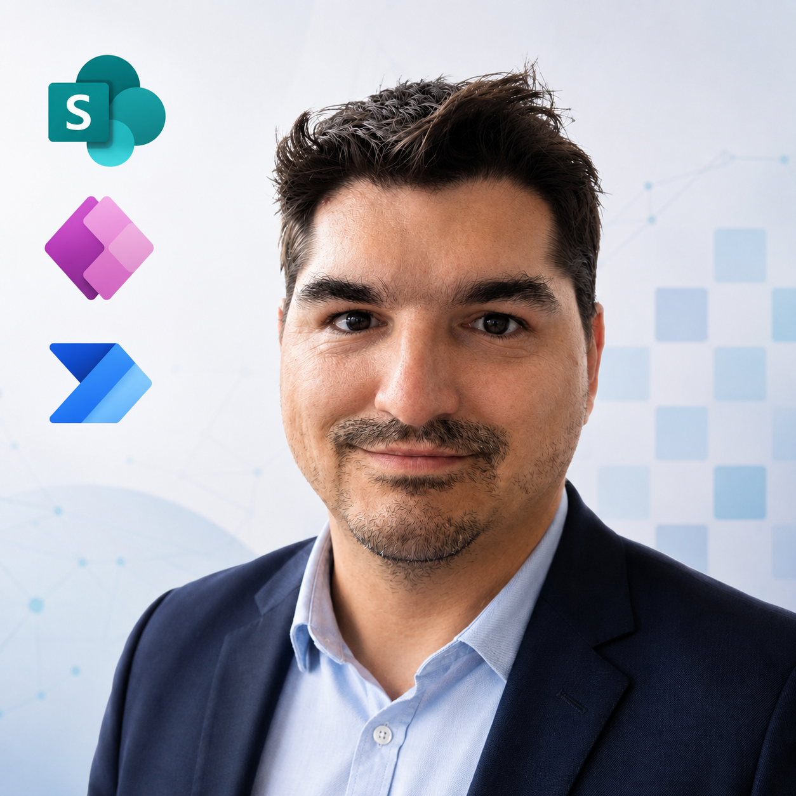
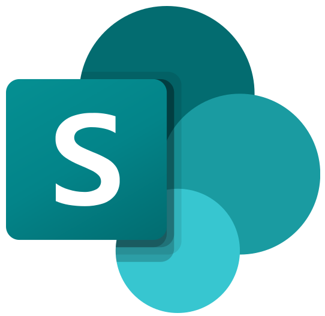

Marek Horák
M365 Automation Specialist & Developer
Baví mě propojovat světy IT a běžného provozu. Navrhuji a stavím firemní aplikace kompletně od A do Z s primárním zaměřením na maximální úsporu licenčních nákladů. Moje řešení jsou intuitivní, praktická a přinášejí okamžitou hodnotu bez skrytých poplatků.
Vyberte formu spolupráce:

Primární technologie
 Power Apps
Power Apps
 Power Automate
Power Automate

SharePoint